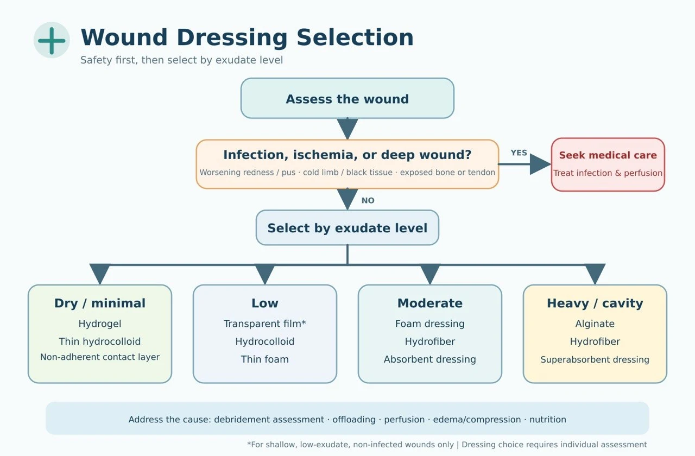

Dressing Selection Principles & Wet Gauze Technique (Professional)
Clinical edition for healthcare professionals ・ 2026.08 condensed edition ・ Compiled from WHS / IWGDF 2023 / EPUAP-NPIAP-PPPIA 2019 / EWMA guidelines; full citations in the Guidelines Library
1. Assessment before dressing selection
Shared principle across guidelines: dressing selection must be built on standardized assessment, not on defaulting to a product (EPUAP/NPIAP/PPPIA 2019; IWGDF 2023).
| Assessment domain | Impact on dressing choice |
|---|---|
| Etiology (diabetic foot / pressure / arterial / venous / radiation / malignancy) | Determines the need for offloading, compression, vascular assessment, biopsy, or palliative care |
| Perfusion (pulses, ABI/TBI, toe pressure) | Do not rashly apply moist dressings to dry black eschar or debride aggressively in arterial ischemic wounds (WHS Arterial Ulcers 2024) |
| Infection (erythema, swelling, warmth, pain, pus, fever, cultures) | Determines antimicrobial dressings, debridement, antibiotics, or surgery; uninfected ulcers do not need antibiotics (IWGDF/IDSA 2023) |
| Exudate (volume, character, strike-through speed) | Determines absorbency, dressing-change frequency, and periwound skin protection |
| Depth and dead space (undermining, sinus tracts, exposed tendon or bone) | Determines packing, NPWT, or further debridement |
| Pain / bleeding, periwound skin | Determines non-adherent or silicone contact layers, skin barrier film, and low-trauma fixation |
2. Bedside mnemonic and selection workflow

| Rule | Dressing direction |
|---|---|
| Dry: rehydrate | Hydrogel, non-adherent; assess perfusion first for dry black ischemic eschar |
| Wet: absorb | Foam, alginate, hydrofiber, superabsorbent dressings |
| Dirty: debride | Decide the debridement method first (see debridement decisions); dressings are only adjuncts |
| Odor: control bioburden | Antimicrobial dressings, activated charcoal; systemic therapy when needed |
| Deep: pack loosely | Alginate rope / hydrofiber ribbon; never pack tightly, and ensure complete retrieval |
| Painful: non-adherent | Silicone contact layer, non-adherent dressings, low-tack fixation |
| Protect periwound skin | Skin barrier film, increased absorbency, low-allergenic fixation |
| Ischemic: assess perfusion first | Vascular assessment and referral first (SVS/GVG 2019) |
For the functions, indications, limitations, and brand reference of each dressing category, see the Dressing Center; for interactive selection, see the Dressing Selector. In practice, use a layered combination of "contact layer + absorbent layer + fixation layer" rather than seeking a single all-in-one product.
3. Dressing directions by etiology (summary)
| Wound type | Dressing direction | Etiologic priority (guideline core) |
|---|---|---|
| Diabetic foot | Non-adherent, foam, hydrofiber, alginate; pack deep cavities | Offloading and vascular assessment matter more than the dressing; rule out osteomyelitis (IWGDF 2023) |
| Venous ulcer | Foam, superabsorbent, alginate, hydrofiber | Compression therapy is the cornerstone; confirm arterial perfusion before compressing (WHS 2016; EWMA 2023) |
| Arterial ulcer | Dry black eschar without infection → keep dry and protect; low exudate → non-adherent | Perfusion first; never debride ischemic eschar indiscriminately (WHS 2024) |
| Pressure injury | Silicone foam, alginate, hydrofiber; NPWT when indicated | Pressure redistribution is the cornerstone; choose dressings by stage (EPUAP/NPIAP/PPPIA 2019; see the reference table) |
| Radiation / malignant wounds | Non-adherent, silicone contact layer, superabsorbent, activated charcoal | Exclude recurrence; for malignant wounds the goals are exudate control, odor control, hemostasis, and pain relief (EWMA 2025) |
4. Dressing-change frequency and reassessment
| Situation | Frequency direction |
|---|---|
| Infection, heavy pus, close observation required | Daily or more frequently |
| Heavy exudate, easy strike-through | Change earlier at strike-through + increase absorbency |
| Moderate, stable exudate | Every 2–3 days |
| Clean, low exudate / near healing | Extend the interval; minimize traction to protect new epithelium |
- Change earlier if the dressing leaks, loosens, or is contaminated; sudden increase in pain, malodor, spreading erythema, or fever → reassess for infection
- Periwound maceration → increase absorbency, shorten the interval, apply a skin barrier film
- No clear improvement in 2–4 weeks → reassess perfusion, infection, pressure, nutrition, malignant transformation, and the dressing strategy
- Antimicrobial dressings are for time-limited use with reassessment at 1–2 weeks, not routine prophylaxis (IWGDF/IDSA 2023)
5. Common errors (safety bottom lines)
| Erroneous practice | Suggested correction |
|---|---|
| Using the same dressing for every chronic wound | Reselect according to etiology and wound-bed status |
| Changing dressings without assessing perfusion / no offloading for diabetic feet / no edema control for venous ulcers | Return to etiologic treatment: vascular assessment, off-loading, compression, and elevation |
| Treating infected wounds with silver dressings alone | Manage by infection severity; do not delay debridement, cultures, and systemic antibiotics |
| Covering only the surface of deep cavities / packing too tightly | Pack loosely and appropriately, confirm retrieval, and track depth |
| Applying moist dressings to, or debriding, dry black ischemic eschar indiscriminately | Assess perfusion first; refer to vascular surgery when needed |
| Long-standing non-healing wounds still not biopsied | Consider biopsy when the appearance is atypical or the edges are raised and bleed easily |
6. Technique: Wet Gauze Dressing — principles of use in wounds requiring debridement
1. Distinguish the two techniques first
| Technique | Primary purpose | Clinical appraisal |
|---|---|---|
| Moist gauze / wet-to-moist Moist gauze / wet-to-moist | Maintain moisture, soften slough, assist autolytic debridement | May be used short-term with adequate perfusion and a clearly defined goal; the gauze should still be moist at removal to avoid injuring granulation tissue. |
| Wet-to-dry Wet-to-dry | Gauze is removed after drying, producing non-selective mechanical debridement | Generally not recommended for routine use; it may remove necrotic tissue, healthy granulation, and new epithelium indiscriminately. |
2. Three mandatory judgments before debridement
(1) Does the wound have the capacity to heal? Assess tissue perfusion first (especially foot, heel, and lower-limb wounds); obtain ABI, TBI, toe pressure, or vascular imaging when needed. Consider active debridement only when perfusion is adequate, healing is possible, and necrotic tissue is impeding healing or infection control.
(2) What type of tissue needs to be removed? Thin, loose slough → short-term moist softening is reasonable; thick adherent necrosis → moist gauze alone is insufficient, evaluate sharp / surgical / enzymatic debridement; healthy granulation / new epithelium → avoid wet-to-dry, switch to a non-adherent dressing; abscess or deep infection → moist dressings cannot replace incision and drainage and anti-infective therapy; dry ischemic eschar → keep dry and address perfusion first.
(3) Is the debridement goal explicit? Softening and removing loose slough, reducing bacterial and biofilm burden, establishing an environment for granulation, and revealing the true wound depth.
3. Key points of technique
- Assess pain, perfusion, infection, bleeding risk, depth, and exposed structures; provide analgesia first when needed
- Low-pressure irrigation with sterile 0.9% saline; remove loose slough, never forcibly pull adherent tissue
- Wring the gauze to moist but not dripping; apply gently and pack cavities loosely — do not pack tightly, leave no fragments, and never pack blindly into sinus tracts whose base cannot be seen
- Add an absorbent secondary dressing and protect the periwound skin; change before the gauze dries out completely; if it has adhered, moisten it first before removal
- Document tissue proportions, exudate, odor, pain, dimensions, and periwound skin at every change
4. Change frequency and when to stop
| Clinical situation | Recommended principle |
|---|---|
| Low exudate with moisture maintainable | Usually once daily |
| Moderate exudate or close observation needed | 1–2 times daily |
| Heavy exudate, contamination, or infection surveillance | 2–3 times daily; frequent saturation → switch to a superabsorbent dressing |
| Dried out, saturated, leaking, dislodged, or soiled by feces/urine | Change immediately |
| Requiring 3–4 changes daily just to stay moist or contain leakage | Moist gauze is unsuitable for long-term use; reselect the dressing |
5. Clinical decision mnemonic (four steps)
Last updated: 2026-08-31 ・ 2026.08 condensed edition (compiled from society guidelines in the Guidelines Library)